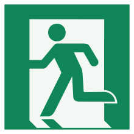
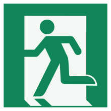

マーくんの ブログ
ブログ
 


ページを開く前の注意。
注意喚起の内容ですが、僕のページは、
IE,旧Edgeでは正常に動作しません。
もしIE,旧Edgeで開いている場合には、Chromeなどの別のブラウザで開きなおしてください。
(上のURLをコピー&ペーストして別のブラウザでこのページを開きなおす)
なお、すでに別のブラウザで開いている場合は、この操作は必要ありません。
クリックしてヘッダーを表示/非表示
-----------------------------------------------------------------------------------------------
マーくんのSurvivブログ。
-----------------------------------------------------------------------------------------------
Survivあるある
このページは、surviv.ioをプレイしていれば、1回は経験するだろう、といった場面をまとめたページである。
-----------------------------------------------------------------------------------------------
Survivあるある100連発
1.M9とOT-38多すぎ(そして拾っちゃう)
2.他の銃弾全然持っていないのに9mm弾(黄色)だけMAX所持している
3.(1)の武器あるいはM1911をジャガイモイベント(あるあるNo.32を参照)以外で持ってる奴n00b説
4.VectorとUMP9を間違える
(よっしゃVectorだ！！！と思ったらUMP9だった時の絶望感)
5.花畑の奥にあるスコープが2倍スコープだった時の絶望感(ふざけんな)
6.チーター回りする(回りながら自分も公転してる奴はn00b)
7.スコープ出ない イライラ
8.回復アイテム出ない、バックも出ない イライラ
9.意外と8倍スコープ出る(なのに15倍スコープは全然でない)
10.ポテトイベントでポテト壊してM9,OT-38,M1911になった時の絶望
11.↑の武器でポテト壊して"最強3兄弟"(M134,PKP Pecheneg,M249)になった時の喜び
12.AK-47とM416比較したがる
13.エイ無である(その結果狙撃銃、マークスマンライフル使えない)
14.M249,PKM,M134のリロード時間が異常(リロード中に一方的に攻撃され爆死)
15.M134一瞬で障害物壊す(Why)
16.AWM-S一発で木を吹き飛ばす(強すぎ)
17.森イベントDP-28出すぎ(DP祭り)
18.コバルトイベントでタンカーの物資から超いいもの出る(防御専門じゃねーのかよ)
19.砂漠イベントで物資多すぎ
20.サバンナの武器連射できないの多い(エイ無にはきつい)
21.強武器拾ったときに限って銃弾が落ちていない(頼むよ)
22.チーミングしようとする奴(自分は問答無用で瞬殺)
23.たまに回線切ったやつがいる(ラッキー) ちなみに50対50だとしょっちゅういる
24.味方が回線切ることがある(味方は通常、攻撃してもダメージを受けないが、回線を切ったものはダメージを受ける)
25.ポテトイベントリスキル多し (チーターも多し)
26.樽を素手で6回パンチして爆発寸前にする(危なすぎ)
27.よくよく考えると素手でトイレや石を壊せるのおかしいことに気づく(トイレから武器3つくらい出るの草)
28.2位から1位になるのムズイ
29.M416とM249見間違える
30.研究所に置かれているVector箱からM9出た時の絶望(お前の出る幕ではない)
31.ハードストーンからM9,または.45 ACP弾1つだけが出た時の絶望感
32.人気イベント(特にジャガイモ、コバルト)とにかく人多い
33.木の葉の重なったところに隠れると絶対ばれない(お前ら鈍いな) ←特に森、50対50でやりやすい
34.何気にM249、PKP Pechenegよりレア説
35.近距離だとよく散弾銃(12 gauge)で殺される (特にMP220)
36.知らぬ間に弾激減 (特にDual G18C,Vector,MAC-10で顕著)
37.クラシックだとイレギュラーな銃弾は持って使わないまま終わることが多い (特に.308 Subsonic,.45 ACP,40mm)
38.Mosin-Nagant,SV-98,AWM-Sなどを2丁持ちしてクイックスイッチして打つと強い
39.MP220とSaiga-12派が分かれる
40.凡用武器(AK-47,M416など)で強武器持ちを倒した時の喜び
41.マイン踏む(そして死ぬn00b)
42.木の間や草にマインをばらまく
43.敵が強武器＆大量キルしてたら「あいつ絶対友達いねえ!!!」と叫ぶ(それお前だけや)
44.コンバットメディック非常に有能
45.エンドレス・アモも非常に有能
46.結果、↑の2つで信者が分かれる。
47.スコープの良し悪しで勝敗が決まる
48.コバルトでフラグ投げまくる奴
49.変な顔出す奴(次出したら警告するぞ)
50.いつの間にか武器の名前を略してる
51.壊すと爆発するもの壊して死ぬn00b
52.うまくなると高速操作によりキーボードのカチカチ音が響く
53.キー設定変える
54.なぜか操作ミスってPKP Pechenegなどの強武器をOT-38などの雑魚武器に持ち替えてしまう
55.慣れてくるとアイコンだけで何の銃かわかる(一番覚えてるのM9とOT-38なんだが)
56.コバルトでいつも同じ役職でプレイする
57.ジャガイモのポテトガン強奪戦半端ねえ
58.Golden Potatoの使い道なし(どれだけプレイしているかの指標にはなる)
59.明日のイベントの予測がつく
60.ハードストーン壊せないと思っているやつ、または大槌、ストーンハンマー、戦槌持ってて壊さないやつn00b説
61.ポテトガンの弾丸バナナやん
62.M79壁に撃って爆死
63.Hawk 12Gの銃身胴体に食い込んどる
64.QBB-97からチーズを連想する俺末期説
65.その日のイベントで一喜一憂
66.回復中の敵は余裕で倒せる
67.ジャガイモイベント(特にソロ)強武器(USAS-12,PKM,M134,PKP Pecheneg,M249,AWM-Sなど)が出たら敵殺したくなくなる
68.↑の武器でポテト壊して雑魚武器にしたときの絶望感(回線切りたい)
69.9mm弾の武器、1発のダメージが雑魚
70.実在しない武器(OT-38)、名前の変わった武器(HK416→M416,Desert-Eagle→DEagle 50)、おかしな挙動をするチート武器(USAS-12)がある
71.マガジンサイズが中途半端な武器がある
72.装填数30発の武器多すぎ(一体いくつあるんだ)
73.リハイヒビファイあまり役立たない(絶対蘇生前に殺される)
74.自分でフラグ投げて自分で死ぬn00b
75.キルリーダーの意味ねえだろ
76.日本家屋、クラブの地下のエンブレムケース爆発すると思って壊さないn00b
77.無駄に武器の名前を覚える(その気力を勉強に使え)
78.ジャガイモイベントは運ゲー
79.ラッパ捨ててえ(もはや武器でもない件)
80.↑を吹く音、青軍(民主党)のほうが上手い
81.50対50のチームに名前を付ける
82.草や木に隠れて奇襲する(そして反撃され自分が死ぬのかっこ悪すぎ)
83.救援物資に人集まりすぎ(そしてフラグやマインで蹴散らす)
84.50対50の救援物資の物多すぎ
85.コバルトで銃弾分けてくれないタンカーn00b説
86.クラブの地下の大浴場激戦地区になりやすい
87.↑のサウナ室で体力回復する
88.アドレナリンアイテムケチる
89.エンドレス・アモがあれば銃で箱壊す
90.↑でしばらくやってると感覚しばらく残っちゃう
91.調子がいい時と悪い時の波が激しい
92.M1911,M9,OT-38で殺された時の絶望感
93.大砲系かM134持っていると移動速度低下するの面倒
94.冬版クラシックの期間短すぎ(冬はもっと長いぞ)
95.15倍スコープ出た時の無敵感ハンパない
96.最低でも4倍スコープないとまともに戦えない
97.Proって名前つけてるやつだいたいn00b説
98.バックドロップできない(Why)
99.何時間もやると手がつかれる

へ移動")